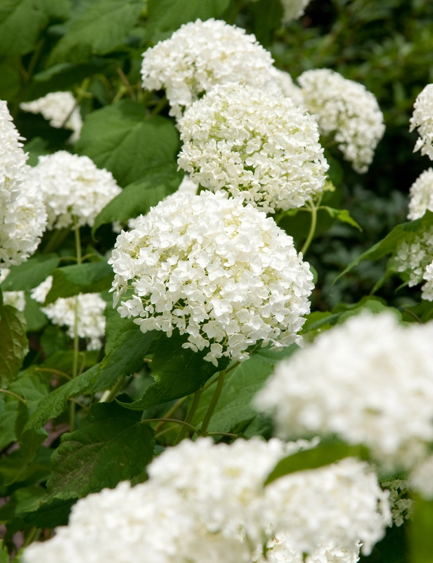

Træagtig Hortensia, Hydrangea arb. 'Strong Annabelle'® , 5 liter potte
En bred, let åbent voksende busk der i juli- august pryder med store, halvrunde hvide blomster. Trives i sol- halvskygge i en almindelig, let fugtig havejord hvor den bliver op til 100 cm. høj og 150 cm. bred.
Pris: 299 kr./stk
Produktbeskrivelse
Jordbund og placeringVidste du, at hortensiaer kan plantes i både almindeligt plantejord og surbundsjord? Uden at være en decideret surbundsplante, trives en hortensia dog bedst i en let sur og luftig jord. Derudover påvirker jordbunden også blomsternes farve på mange sorter af hortensia. Er jorden sur bliver blomsterne blå, er jorden neutral udvikles hvide eller rosa blomster. Denne hortensia bibeholder sin viste farve uasnet hvilken type jordbund den plantes i. Hortensia trives i sol til halv skygge. Udover de rette lysforhold, er det også vigtigt at sikre, at de placeres hvor der er læ for vind.
Vanding
Hortensia er generelt en meget tørstig plante, men hvor meget vand de har brug for, afhænger af, om de står i et bed eller er plantet i krukker. Samtidigt med at de ikke tåler at stå i vand i lang tid, skal de holdes fugtige. En krukkehortensia skal vandes hver anden dag i højsommeren og mindre hyppigt forår og sensommer. Havehortensia skal kun vandes i tørre perioder og især det første år efter udplantning.
Gødning
Ligesom der er forskellige typer af hortensiaer, har de også forskellige næringsbehov. Det gælder dog for alle hortensiaer, at de skal tilføres gødning hvert forår og efterår. Røde og hvide hortensiaer bør have almindelig kunstgødning eller organisk gødning, men tåler også surbundsgødning. Klatrehortensiaer bør kun få organisk gødning og ikke surbundsgødning. Blå hortensiaer bør få surbundsgødning.
Før og efter udplantning
Det bedste tidspunkt at udplante en hortensia på, er om efteråret hvor jorden er lun og fugtig. Planter du hortensia om foråret, skal du huske at vande rigeligt, da det er en meget tørstig plante. Når du udplanter en hortensia, er det allervigtigste at få lavet et stort og dybt nok plantehul samt at vande rigeligt. Gør gerne rodklumpen våd og blød i en spand vand inden.
Beskæring
Nogle hortensia-typer, som den almindelige hortensia, blomstrer på endeskud der er dannet året før - andre hortensia-typer, som havehortensia, blomstrer på endeskud, der er dannet samme år. Begge typer kan beskæres, som er til gavn for vedligeholdelse af form, dog vil beskæringen påvirke blomstringen. Derfor anbefaler vi, at du kun beskærer hortensiaer, hvis det er absolut nødvendigt. Hortensiaer med etårige skud skal helst beskæres om efteråret efter blomstring, imens hortensiaer med toårige skud skal beskæres om foråret inden blomstring.
Overvintring
Når vintersæsonen nærmer sig og frosten kryber sig ind om natten, er det tid til at frostsikre din hortensia. Læg et lag grangrene over jorden tæt op ad planten, eller anvend en fiberdug som beskytter og varmer planten vinteren over. En hortensia sætter tidligt bladspidse, som vil tage skade af nattefrosten, derfor anbefales det, at du først fjerner fiberdugen når der ikke længere er frostgrader om natten.